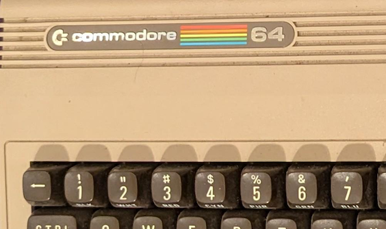
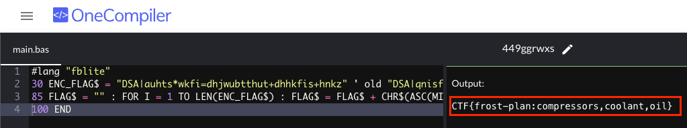
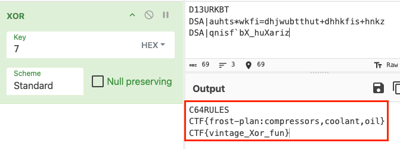
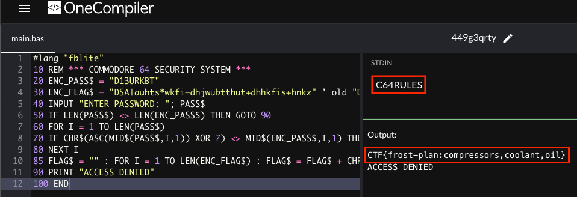

Going in Reverse

Stepping back into the 8-bit world, I bypassed a Commodore 64 security check by analyzing the BASIC source code to unravel a simple XOR encryption scheme.
Challenge Overview
Upon receiving yet another mysterious floppy disk, we were tasked with analyzing a surprisingly short artifact with just 10 lines of Commodore 64 BASIC code. At first glance, it looks like a simple password checker, but a closer look reveals the cryptographic logic hidden within.
The Code
Here's the complete BASIC program found on the floppy disk:
10 REM *** COMMODORE 64 SECURITY SYSTEM ***
20 ENC_PASS$ = "D13URKBT"
30 ENC_FLAG$ = "DSA|auhts*wkfi=dhjwubtthut+dhhkfis+hnkz" ' old "DSA|qnisf`bX_huXariz"
40 INPUT "ENTER PASSWORD: "; PASS$
50 IF LEN(PASS$) <> LEN(ENC_PASS$) THEN GOTO 90
60 FOR I = 1 TO LEN(PASS$)
70 IF CHR$(ASC(MID$(PASS$,I,1)) XOR 7) <> MID$(ENC_PASS$,I,1) THEN GOTO 90
80 NEXT I
85 FLAG$ = "" : FOR I = 1 TO LEN(ENC_FLAG$) : FLAG$ = FLAG$ + CHR$(ASC(MID$(ENC_FLAG$,I,1)) XOR 7) : NEXT I : PRINT FLAG$
90 PRINT "ACCESS DENIED"
100 ENDAnalysis & The Hint
The program stores its secrets in two variables defined at the very top of the code (Lines 20 & 30):
- Encrypted Password (ENC_PASS$):
D13URKBT - Encrypted Flag (ENC_FLAG$):
DSA|auhts*wkfi=dhjwubtthut+dhhkfis+hnkz
The core logic resides in lines 70 and 85. The program iterates through the strings and performs an
XOR operation with the number 7. This brings us to the official hint: "Maybe it is
encrypted OR
encoded?"
- The Clue: The capitalization of "OR" was a clever nudge pointing us directly toward the XOR (Exclusive OR) operator used in the code.
- Encrypt vs. Encode: While often used interchangeably, there is a distinct difference. Encoding transforms data for usability (like Base64) using publicly available schemes. Encryption transforms data for secrecy using a key. Since this program uses a specific key (7) to hide the data, it is technically encryption, albeit a very weak form known as a "Hardcoded Key."
Getting the Flag
Since we have the source code, the easiest way to get the flag is to run the program ourselves. I used OneCompiler to execute the BASIC code in the browser.
However, instead of trying to guess the password, I simply modified the code to work for me. By removing the password check logic (lines 40-80) and adding #lang "fblite" for compatibility, I forced the program to decrypt and print the flag immediately:

Alternate Solution: Cyberchef
Alternatively, we can solve this without running any code by using CyberChef. Since we identified the logic as XOR 7, we can manually decrypt the strings. There was another ciphertext in a comment on line 30 labeled as old.

The decrypted password is C64RULES, and the old decrypted flag is
CTF{vintage_Xor_fun}.
Closing the Loop
With the password recovered from CyberChef, I went back to OneCompiler to run the code exactly as
intended. I pasted the original code, typed C64RULES into the STDIN (input) field, and
the program successfully authenticated me and released the flag.

Challenge Reference Material
Challenge Descriptions
Classic Mode Description
Kevin in the Retro Store needs help rewinding tech and going in reverse. Extract the flag and enter it here.
CTF Mode Description
You know, there's something beautifully nostalgic about stumbling across old computing artifacts. Just last week, I was sorting through some boxes in my garage and came across a collection of 5.25" floppies from my college days - mostly containing terrible attempts at programming assignments and a few games I'd copied from friends. Finding an old Commodore 64 disk with a mysterious BASIC program on it? That's like discovering a digital time capsule. The C64 was an incredible machine for its time - 64KB of RAM seemed like an ocean of possibility back then. I spent countless hours as a kid typing in program listings from Compute! magazine, usually making at least a dozen typos along the way. The thing about BASIC programs from that era is they were often written by clever programmers who knew how to hide things in plain sight. Sometimes the most interesting discoveries come from reading the code itself rather than watching it execute. It's like being a digital archaeologist - you're not just looking at what the program does, you're understanding how the programmer thought. Take your time with this one. The beauty of reverse engineering isn't in rushing to the answer, but in appreciating the craft of whoever wrote it. Those old-school programmers had to be creative within such tight constraints.
Official Hints
- Holy cow! Another retro floppy disk, what are the odds? Well it looks like this one is intact.
- Maybe it is encrypted OR encoded?
- It looks like the program on the disk contains some weird coding.